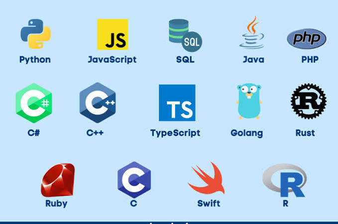

Articles

中国航天技术的“破”与“立”：发展现状评估及对美限制措施的应对策略
本文梳理了中国目前的航天技术与当前面临的挑战，指出中国在全球导航卫星系统、 空间站的建设、月球探测等领域处于世界领先水平，而在深空探测、可重复使用火箭技术、 重型运载火箭技术与世界领先水平仍有差距。在此基础上，本文探讨了美国对中国航天技术 的发展采取的制裁手段，包括沃尔夫条款、投资管控、限制相关人员项目合作等。为应对这些挑战， 文章建议中国应坚持技术自主创新、加快发展商业航天、深化国际合作与标准建设，保障国家航天 安全并为全球太空治理贡献中国智慧。
Explore →2026年新高考数学压轴题
对新高考一卷、二卷的数学压轴题进行解析和锐评
Explore →
History of Programming Languages
This article provides a comprehensive overview of the evolution of programming languages, tracing their development from early assembly languages to modern high-level languages. It explores the key milestones, influential languages, and the impact of programming paradigms.
Explore →